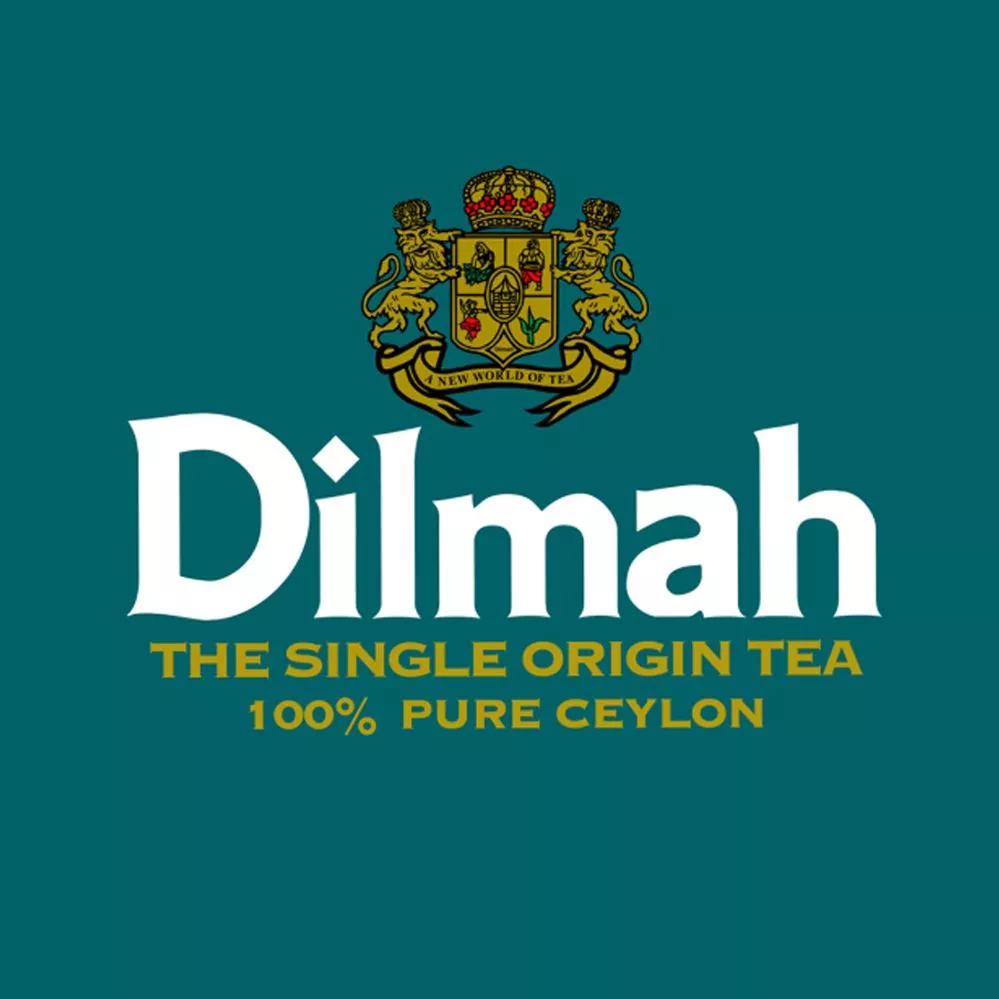
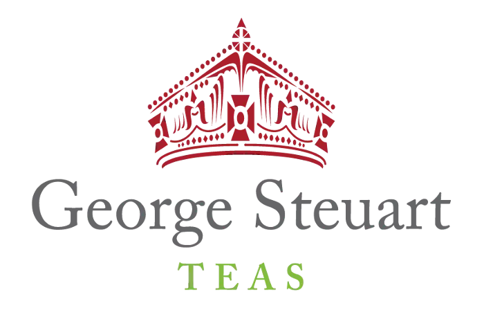
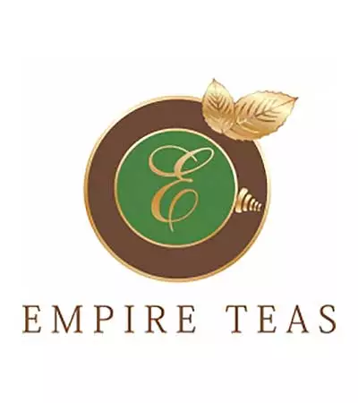

SriLankan Tea Manufacturers
Dilmah Tea
Dilmah Tea Company was founded in 1988 by Merril.J.Fernando. Dilmah tea company was the first producer who owned a tea brand. To keep Dilmah company and it's products upto standards they follow 12 unique principles. Because of following those principles and standards seriously they have accuired food safety certificates, Quality management certificates and so on. Dilmah is one of the leading tea brands in SriLanka which has spread it's flavour across the world.
George steuart Teas
George steuart & Co was etablished in 1835 and it is one of the oldest corporate house locally and one of the oldest mercantile establishments in the world. They are a member of Colombo Tea Traders Association and Ceylon Tea Exporters Association. GS Teas create their products according to the standards and they have more than 100years of experience in this field. GS Teas also another one of SriLankan leading tea brands.
Empire Teas
Empire teas also a leading exporter among the top exporters of Sri Lanka. They annually export over 14 millons kgs of tea. Empire teas products are also widely known around the world for it's unique taste. Their products are made out of using recyclable materials and they are a certified company which follows global standards accordingly.